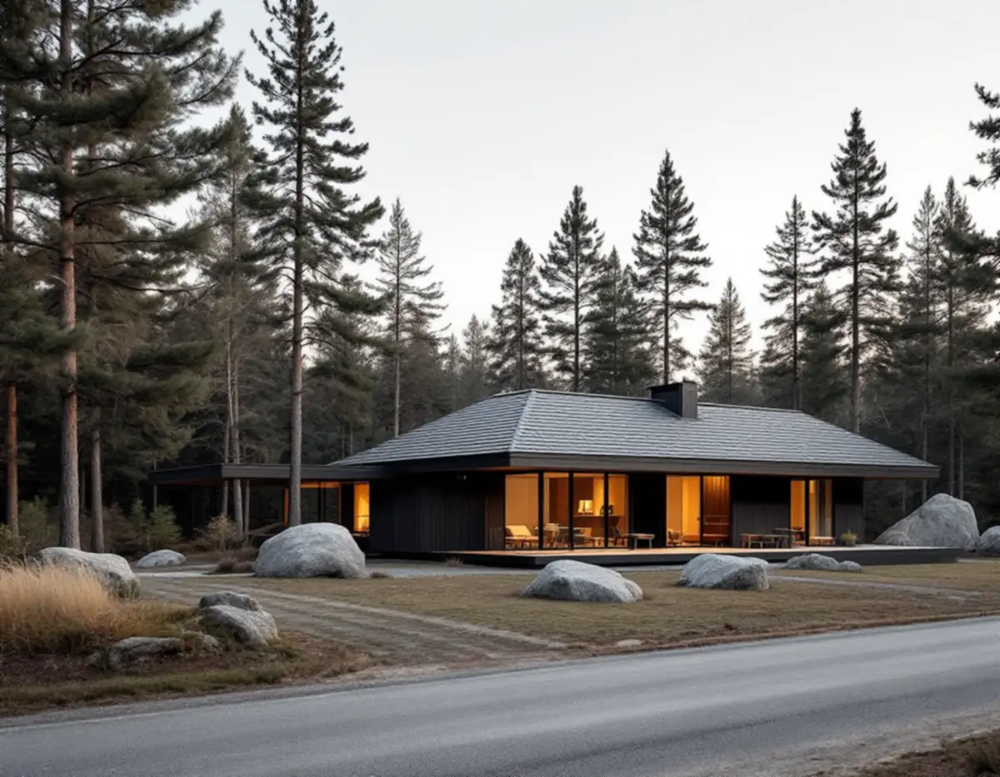
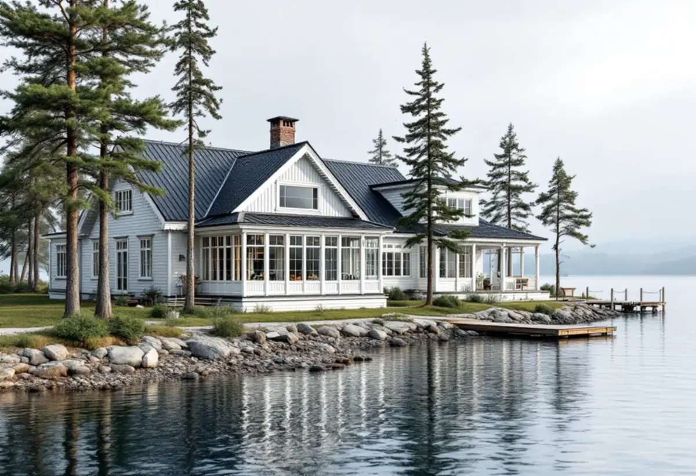

Ö, område och lov
Vi kontrollerar i Ekerökartan om fastigheten ligger i ett särskilt värdefullt område.
En takrenovering på Ekerö kan betyda helt olika saker beroende på ö. I Stenhamra är det ofta ett villatak från 1960- eller 70-talet som läggs om, på Kungshatt en sekelskiftesvilla som bara kan nås med båt, och på Adelsö ett fritidshus inne i skogen. Vi börjar med husets läge och ålder och lägger upp arbetet efter det.

Enligt SCB fanns det 9 131 bostäder i småhus i Ekerö kommun 2024. Kommunens kulturmiljöprogram från 2015 visar hur olika de ligger. Tätorterna längs tätortsbandet har villor och radhus från andra halvan av 1900-talet, Kungshatt har nästan bara sommarhus och på Adelsö ligger fritidshusområdena dolda i skogsterrängen.
Det gör att det inte finns något typiskt Ekerötak. Ett 70-talstak med betongpannor, ett plåttak på en panelvilla med veranda och ett papptak på en stuga i skogen har var sin svaghet, och var sitt sätt att renoveras. Vad som ingår i jobbet och hur det går till beskriver vi under takrenovering.

Stenhamra på Färingsö etablerades 1884, när stenbrottet grundades. Brottet lades ned 1937. Stenhuggarbyn med arbetarlängor, butik, ingenjörsbostad och skola finns kvar som en sammanhängande miljö. Under det tidiga 1900-talet började arbetarna bygga egna hem utanför byn. Programmet konstaterar att de villorna finns kvar men har förändrats och byggts om under årens lopp.
I dag domineras Stenhamra av villor från andra halvan av 1900-talet, framför allt enfamiljshus från 1960- och 70-talen. Villaområdet längs Ramundvägen beskrivs som ett av de bästa exemplen på modernistisk arkitektur på Mälaröarna, och kommunen rekommenderar att det får fler skyddsbestämmelser i detaljplan. Gestaltning, skala och färgsättning i 1900-talets villabebyggelse bör enligt programmet respekteras.
För ett tak från den tiden betyder det oftast att underlagspapp, läkt och plåtdetaljer har nått sin livslängd samtidigt. Ligger huset i ett enhetligt område är det klokt att behålla takets form och kulör, så att gatan fortsätter att hänga ihop.
Kungshatt saknar fast landförbindelse, är bilfri och har få bofasta. Här låg ett av Mälaröarnas största tegelbruk fram till 1940-talet, med storhetstid under andra halvan av 1800-talet då Stockholm behövde tegel. Kvar från bruket finns arbetarbostäderna, kamrersvillan och tegelmästarvillan.
På ön finns ett femtiotal sommarvillor från tiden kring sekelskiftet 1900, med rikt dekorerad panelarkitektur och öppna eller inglasade verandor på tomter med klippväggar. Programmet anser att prövningar där sommarbostäder blir åretruntbostäder bör göras restriktivt och att ny bebyggelse ska anpassas i storlek, material och färg.
Ett takjobb på Kungshatt kräver att allt material, all utrustning och allt rivningsavfall fraktas över vattnet. Därför planerar vi mängder, leveranser och bortforsling i detalj innan arbetet startar, och vi försöker återanvända så mycket av det gamla taket som går.
Ekerö kommun skriver att fasadändring i regel inte kräver bygglov, men att det finns undantag. Ett av dem är om fastigheten ligger i ett område som har bedömts som särskilt värdefullt – då går det inte att använda de ändrade reglerna. Vilka områden det gäller visas i Ekerökartan, och kommunen erbjuder att bedöma frågan om man skickar in ett foto av huset och en beskrivning av ändringen.
Byte av takmaterial räknas som en ändring av byggnadens yttre utseende. Utanför de värdefulla områdena är det normalt lovfritt för ett en- eller tvåbostadshus sedan den 1 december 2025, enligt Boverket. Kring Skå kyrka gäller områdesbestämmelser med utökad lovplikt. Mer om reglerna finns under bygglov vid takbyte.
Adelsös sjönära och isolerade läge har gjort ön populär för fritidsboende. Enligt programmet byggdes förhållandevis stora områden med fritidshus under andra halvan av 1900-talet, på öns södra sida och intill färjeläget, och de ligger dolda i skogsterrängen.
Träd tätt inpå huset ger skugga, barr i rännorna och långsam upptorkning efter regn. På ett lågt lutande tak med papp blir barr liggande och håller kvar fukt, och på pannor får mossan fäste. Vi rensar ränndalar och rännor i samma arbete och ser över mossa på taket. Se även takläggare på Ekerö och plåtslagare på Ekerö.
Vi kontrollerar i Ekerökartan om fastigheten ligger i ett särskilt värdefullt område.
Underlag, läkt, plåt och ventilation bedöms inifrån och utifrån.
Färja, båt eller smal väg avgör hur material, ställning och container kommer fram.
Gammal papp och skadad läkt tas bort, och ny papp och läkt läggs.
Pannor eller plåt läggs, och plåt vid skorsten, ränndalar och takfot görs om.
Rivningsavfall forslas bort och vi går igenom taket med dig.
Du får tillbaka 30 procent av arbetskostnaden som rotavdrag, men högst 50 000 kr per person och år och högst 75 000 kr ihop med rutavdrag. Kostnader för material och resor ger inget avdrag. Vi gör avdraget direkt på fakturan, enligt Skatteverket.
Sommarvillan på Kungshatt och fritidshuset på Adelsö ger rätt till avdrag på samma sätt som en villa i Stenhamra, så länge du äger huset och använder det. Läs mer om rotavdrag för takarbete.
På Ekerö påverkas kostnaden mycket av transporterna: färja, båt eller lång väg till tomten. Därtill kommer takets storlek och lutning, hur mycket av underlaget som behöver bytas och hur många detaljer i plåt som ska göras om. Läs mer om vad en takrenovering kostar eller räkna på ditt tak i kalkylatorn för takbyte.
Takbyte, besiktning och plåtarbeten.
Takläggare på Ekerö →Så fungerar en omläggning.
Takrenovering och takomläggning →Det här styr priset.
Vad kostar en takrenovering? →Räkna på takytan och ROT.
Takbyte-kalkylator →Trädgårdsstäder, tegel och funkistak.
Takrenovering i Bromma →Villastaden, Hässelby strand och gård.
Takrenovering i Hässelby →Solhem, Bromsten, Flysta och Sundby.
Takrenovering i Spånga →